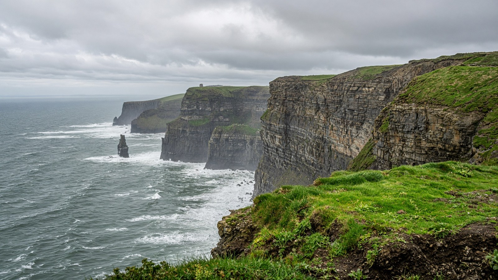

أوروبا
أيرلندا
Ireland
جزيرة العمل التقني في أوروبا.
- العاصمة
- دبلن
- نظام الحكم
- جمهورية
- التأسيس / الاستقلال
- 6 ديسمبر 1922
- النوع
- جمهورية
منذ التأسيس
الدولة الأيرلندية الحرة 1922، جمهورية منذ 1949. عاصمتها دبلن.
معالم
- طبيعةcliff of Moher
غرب.
- معماردبلن
ترينيتي.
- معلمحلقة كيري
جنوب غرب.